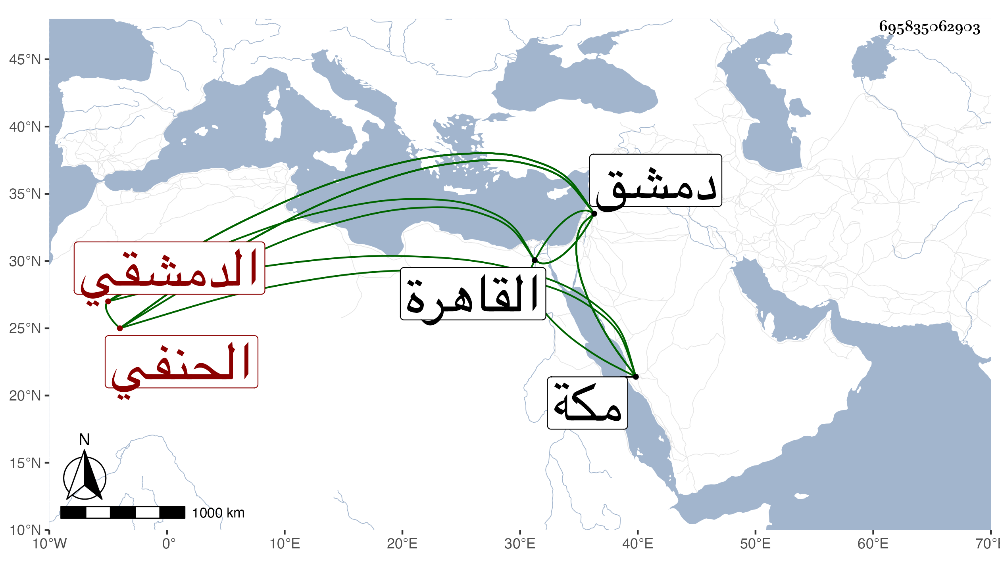

0902Sakhawi.DawLamic.ITO20230111-ara1.EIS1600.695835062903
Biography ID: 695835062903
206
عبد الرحمن بن أبي بكر بن محمد الزين بن العز الدمشقي الحنفي ويعرف كسلفه بابن العيني . ولد بدمشق سنة سبع وثلاثين وثمانمائة ، ونشأ بها فحفظ القرآن وكتبا واشتغل بالفقه وأصوله عند حميد الدين وبكثير من العقليات عند حسين قاضي الجزيرة ويوسف الرومي في آخرين ، وقدم القاهرة فأخذ بها في الفقه وأصوله أيضا عن الزين قاسم والقراءات عن الشهاب بن أسد بل بلغني انه أخذ في العروض عن أبي الفضل المغربي ولكنه لم يستكثر من الشيوخ وقد سمع علي الشاوي ونشوان وغيرهما بل حضر عندي بعض المجالس واختص بابن مزهر ونوه به بحيث صار بأخرة يعد من أعيان مذهبه وناب في تداريس لقاضي الحنفية بدمشق كالعذراوية والركنية بل درس إصالة بالمرشدية وبتربة بالشرف الأعلى وغير ذلك ، وصنف في العربية والعروض بل وفي أصولهم وكذا كتب في تفسير اللغة التركية مع نظم ونثر وعقل ومداراة ولكنه تسلط بنفسه وبطلبته على فقيه بلده وشيخه العز بن الحمراء ليكون هو المشار إليه ، هذا إلى تمول صار إليه من قبل أبيه فقد كان تاجرا وكذا من غيره ونماه هو وتوجه للتدريس والافتاء وأخذ عنه جماعة من الطلبة وانتهى الأمر له في قضاء الحنفية بدمشق حين اجتياز السلطان بها عقب وفاة العلاء بن قاضي عجلون فلم يسمح بما طلب منه فعدل عنه لابن عيد مجانا وبالجملة فقد نال رياسة ووجاهة حتى مات في سنة ثلاث وتسعين وبلغنا ذلك وأنا بمكة فتأسفت على فقده ونعم الرجل كان رحمه الله وإيانا .
